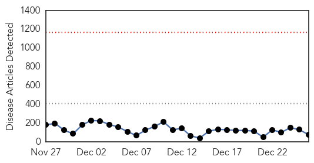
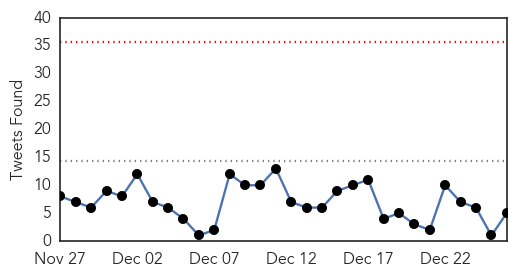
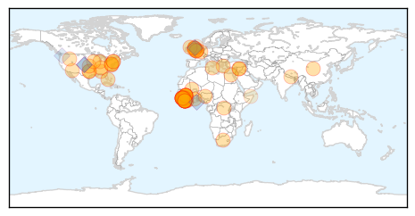
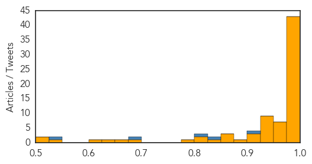

Ebola
30-Day Web Trend
0 alerts, 0 warnings

30-Day Twitter Trend
0 alerts, 0 warnings

Article Locations
Article Confidences
Top Articles:
- 1.000
- Ebola: Death toll rises to 7,693 (VIDEO)
- 1.000
- Experts: It was a busy, black-eye year for disease control : Lifestyles
- 1.000
- Next in Ebola Plan: UN Teams to Study Lines of Transmission
- 1.000
- Christmas just another day for those fighting Ebola in West Africa, says UN staffer
- 1.000
- Under control? 2014 difficult year for public health
- 1.000
- the edge of knowledge
- 1.000
- UN Says Ebola Response On Track
- 1.000
- What Ebola has taught us
- 1.000
- Ebola death toll rises to 7,693: WHO
- 1.000
- Ebola crisis now 'stable' in Guinea: WHO
- 0.999
- China to test Ebola vaccine
- 0.999
- Squirrel Hill aid worker helped manage Ebola response in Sierra Leone
- 0.998
- Sierra Leone on three-day lockdown to halt spread of Ebola (VIDEO)
- 0.998
- Ebola Zombies, Banksy Unmasked & Crabzilla
- 0.998
- Brutal year ends in Ebola hit West Africa - Sierra Leone
- 0.998
- Death toll now 7693
- 0.997
- FBC News
- 0.997
- UK Prone to Pandemics Over Lack of Specialized Agency: Ebola Co-Discoverer
- 0.996
- Liberia’s House Speaker Denies Manipulating Election Outcome
- 0.996
- Police in Maebashi, Gunma Prefecture, took a man into custody in connection with the murder of an elderly man on Dec 16.The suspect, identified… Read
- 0.996
- CDC monitoring tech for possible Ebola exposure
- 0.996
- Ebola fight will be long;
- 0.996
- S.Leone nurses strike over Ebola hazard pay amid lockdown
- 0.995
- Op-Ed: Bill Foege on how to make Ebola worse
- 0.995
- CDC Monitoring Tech for Possible Ebola Exposure
- 0.995
- CDC monitoring tech for possible Ebola exposure
- 0.994
- CDC monitoring tech for possible Ebola exposure
- 0.991
- Europe 'needs outbreak hit squad'
- 0.991
- Guinea, one year on: Red Cross calls on international community to expand Ebola response efforts - Guinea
- 0.988
- Ebola, a long and bumpy tale
- 0.987
- Liberia's UN mission reports 4th Ebola case
- 0.987
- Ebola survivor returns to treat patients
- 0.986
- Ebola crisis: Sierra Leone declares three-day lockdown in north
- 0.986
- Sierra Leone in lockdown for Christmas as Ebola fight continues
- 0.986
- Ebola expert calls for European anti-virus ‘corps’
- 0.985
- Incident manager recounts CDC's Ebola response
- 0.984
- Ebola 'hit squads' needed in Europe
- 0.983
- Kenya : Sierra Leone declares five-day Ebola lockdown in north
- 0.983
- Expert: Europe should regard Ebola as ‘national security issue’
- 0.982
- Better preparedness can ward off future Ebola threat
- 0.980
- Man stabbed to death in Brooklyn
- 0.977
- Europe 'needs outbreak hit squad'
- 0.976
- Not a Merry Christmas in Ebola-Stricken Sierra Leone
- 0.975
- In Liberia, Ebola steals Christmas
- 0.974
- Europe 'needs outbreak hit squad'
- 0.974
- Ebola expert calls for European anti-virus 'corps'
- 0.964
- Ebola expert calls for European anti-virus 'corps'
- 0.962
- Ebola: Sierra Leone nurses stay off work due to non-payment of hazard pay
- 0.953
- Sierra Leone observes somber, gathering-free Christmas
- 0.951
- I want a hug when I’m home « Express & Star
Showing top 50 articles...
Top Tweets:
- 0.913
- RT: EBOLA OUTBREAK UPDATES---December 26 2014 DISCHARGED CASES • Total Survived and Discharged Cases = 1685 NEW... htt…
- 0.834
- Our hearts and minds are with our UN family member who tested positive for Ebola. – Peter Graaff Liberia. EbolaResponse
- 0.814
- What if instead of Ebola that had been a mammalian-transmissible flu strain sent down the hall at the CDC? GOF 2/3
- 0.689
- RT: Sierra Leone MOH Ebola Update Dec 26: 60 New Conf. Cases & 13 Susp.; 30 New Conf. Deaths https://t.co/LtvG3fPyDc
- 0.529
- On this Christmas Day Sierra Leone has declared a three-day lockdown. The Ebola outbreak is not over http://t.co/AUrfaxtJ9d
Measles
30-Day Web Trend
30-Day Twitter Trend
0 alerts, 0 warnings

Article Locations


Article Confidences

Top Articles:
-
No articles found for Dec 26, 2014
Top Tweets:
-
No tweets found for Dec 26, 2014